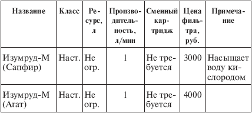

Бытовые фильтры. для очистки воды НПО «Экран» .

О фильтрах «Изумруд» НПО «Экран» (Москва) необходимо поговорить отдельно, поскольку в них реализована технология очистки воды, которую в целом можно назвать электрохимической. В руководстве по эксплуатации она описана так: «Принципиально новая технология очистки воды из нескольких стадий, разделенных во времени и пространстве: анодное окисление, обеспечивающее уничтожение микроорганизмов и деструкцию вредных органических соединений, электромиграционное удаление ионов тяжелых металлов, каталитическое разложение (нейтрализация) ионов тяжелых металлов, электромиграционное удаление нитратов и нитритов». К этому следует добавить, что в воде сохраняются все полезные минеральные вещества, а биологическая ценность воды повышается в результате обработки электрическим полем.
Далее я буду говорить о фильтре «Изумруд-М» и его моделях «Изумруд-сапфир» и «Изумруд-агат» (табл. 5.9), которые различаются тем, что «Агат» дополнительно насыщает воду кислородом (кроме того, имеются еще «Изумруд-кварц», «Топаз», «Алмаз», «Аквамарин», «Кристалл» и «Рубин»).
Внешне фильтр представляет собой изящный корпус размером 23ґ30 см, толщиной 5 см и весом 1,4 кг. Он закрепляется на стене. Прибор всегда подключен к сети, но потребляет энергию (очень небольшую) лишь во время фильтрации. Имеется три трубки: одна – с патрубком – на кран, из другой выходит очищенная и активированная вода, из третьей – загрязненная вода. Напор воды из крана регулируется очень просто: когда он достаточно велик, на корпусе прибора загорается лампочка-индикатор. Поскольку в фильтре нет никакого сорбента, вопрос о картриджах отпадает; необходимо лишь после производства 150–200 л очищенной воды промыть прибор через трубки 15 %-ной уксусной кислотой или 5–7 %-ной соляной в количестве 0,3–0,4 л. Вскрывать прибор запрещается.
Таблица 5.9. Фильтры «Изумруд»

Примечания.
1. Сокрашение «не огр.» означает, что ресурс практически не ограничен, при условии, что вы регулярно промываете прибор кислотой. В руководстве по эксплуатации ресурс не указан, но в литературе и в Интернете я нашел сообщения о том, что прибор рассчитан на десять лет, или на 20 000—30 000 ч работы, что при выходе воды 60 л/час составляет 1,2–1,8 тыс. т – хватит на всю жизнь!
2. В руководстве по эксплуатации не даны показатели очистки, а просто сообщается, что прибор очищает воду от любых загрязнений. В Интернете я нашел сведения о том, что микробиологическая очистка практически 100 %-ная, а по тяжелым металлам и вредной химии она составляет 50–90 %, причем такой колоссальный разброс никак не объясняется.
3. Так как я обладаю опытом работы с моделью «Изумруд-агат», могу подтвердить, что этот прибор очень удобен в эксплуатации: вода течет быстро, промывку нужно делать раз в месяц, и занимает она около часа. Процесс довольно прост, если вы найдете кислоту должной концентрации – в Петербурге такая обнаружилась в одном-единственном месте после длительных поисков. Дело в том, что соляная кислота в аптеках отсутствует, да и выдают ее только по рецепту, уксусной эссенции в магазинах тоже нет, а есть только кислота 9 %-ной концентрации.
Комментарий.
По цене, сравнимой со стоимостью самых мощных стационарных фильтров «Аквафор Трио» и «Гейзер-3», «Изумруд» имеет перед ними потрясающие преимущества: никаких подверженных старению узлов, никаких затрат на сменные картриджи, никаких углей и полимеров плюс компактность, чистота, изящество. А выход питьевой воды в сто раз больше – тысяча тонн против десяти! Значит, вода обойдется в сто раз дешевле, чем гейзерная или аквафоровская. Возникает вопрос: почему же фирмы «Аквафор» и «Гейзер» до сих пор не вылетели в трубу – ведь их продукция абсолютно неконкурентоспособна в сравнении с «Изумрудом»? Есть вроде бы разумный ответ: «Изумруд» создали совсем недавно, и он продается год-другой, так что в недалеком будущем все производители сорбционных фильтров обязательно разорятся. К сожалению, этот ответ не проходит: уже в 1992 г. существовала российско-британская компания «Эмеральд», выпускавшая целую серию «Изумрудов» – этот факт отражен в публикации 1993 г. «Установки для комплексной очистки питьевой воды «Изумруд» [15].
Так в чем же дело? Попробуем разобраться с этой загадкой в следующей главе.